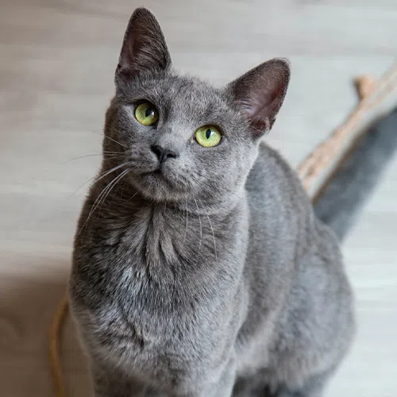

O Korat não exige muitos cuidados especiais, mas saber de suas necessidades e particularidades individuais é essencial. São gatos que não lidam tão bem como agitação e barulho, preferindo um local mais tranquilo, e não são tão sociáveis com quem não conhecem. Por isso, sempre faça a introdução adequada a alguém novo na família. Sua pelagem é curta, exigindo apenas uma escovação semanal. Apesar de ser um gato tranquilo, é necessário estimular seu cérebro com brinquedos e atividades para que gastem energia e faça-o sair do tédio. Um enriquecimento ambiental também é fundamental, ofereça lugares altos e arranhadores para ele poder expressar seu comportamento natural de arranhar e escalar. Além disso, cuidados básicos como escovação de seus dentes, alimentação adequada e consultas periódicas ao médico veterinário são necessários para manter seu bem-estar.

Ronaldo
Ronaldo
Korat é uma raça de felinos de pelagem azul, seus rabos possuem um brilho cintilante e são muito escuros. Seus olhos são grandes, luminosos e verdes, dando a impressão de estarem sempre alerta. O Korat pode ser considerado uma das raças de gatos domésticos mais antigas que existem, porém, não há nada de primitivo nesse bichano, pois, eles são muito carinhosos e necessitam de atenção de seus pais humanos.